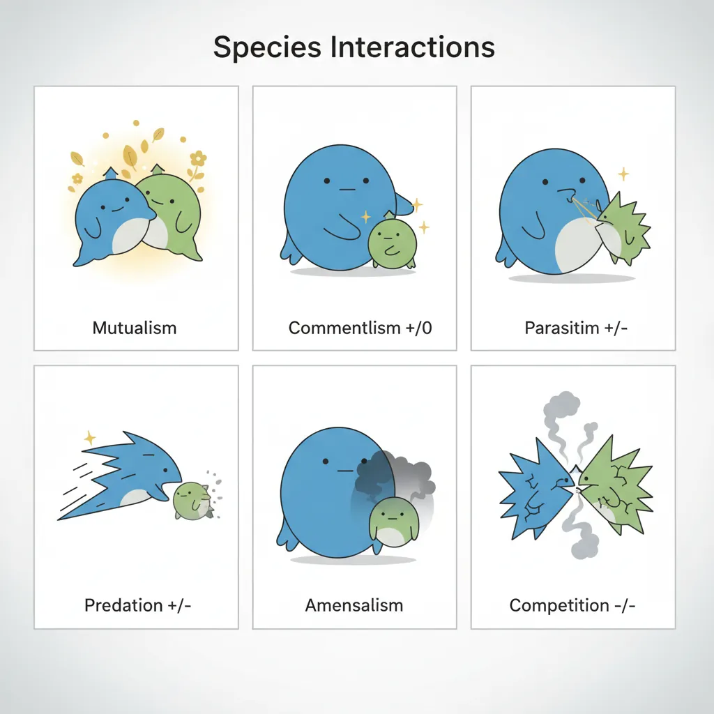
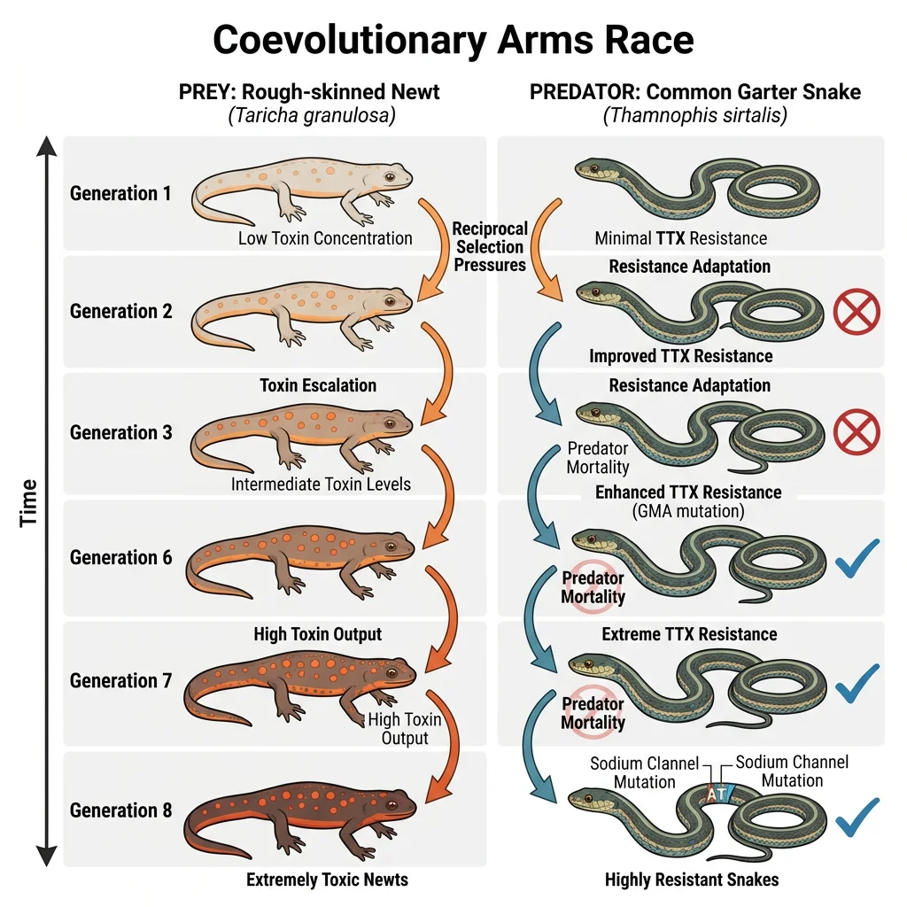
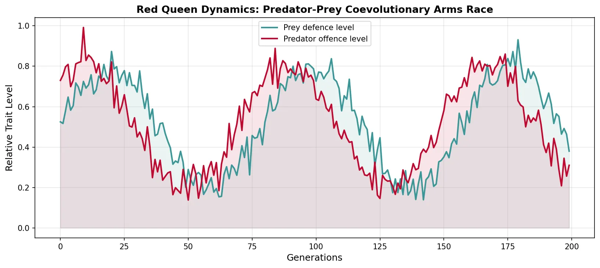
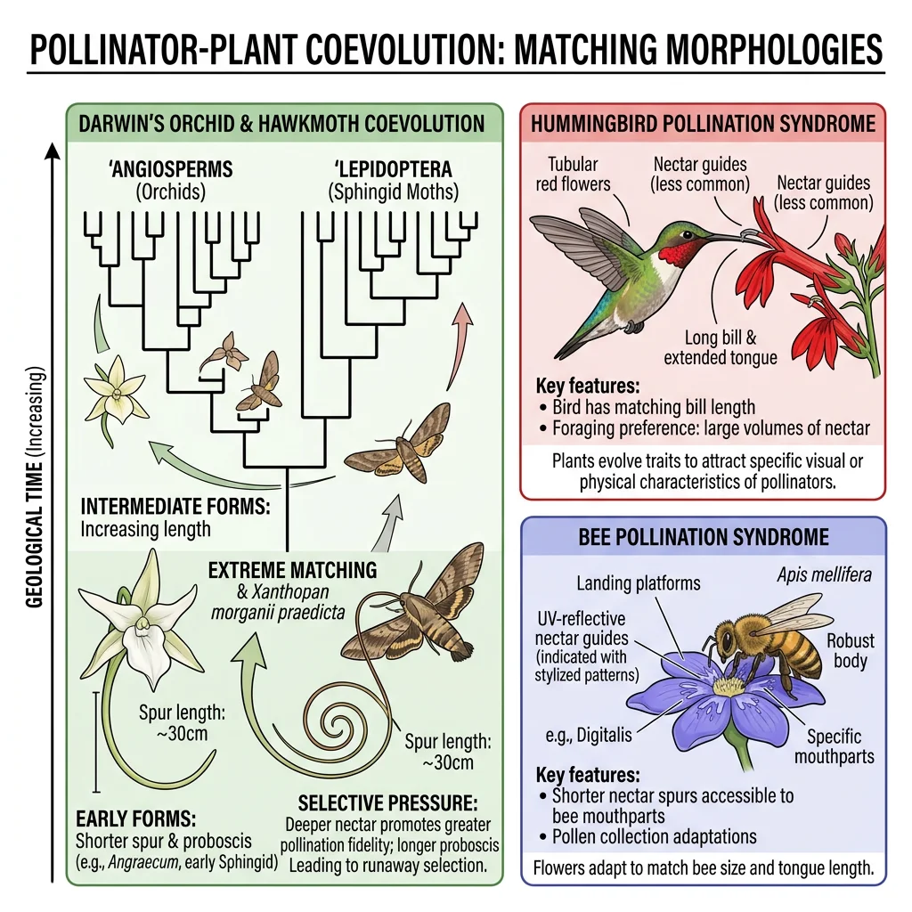
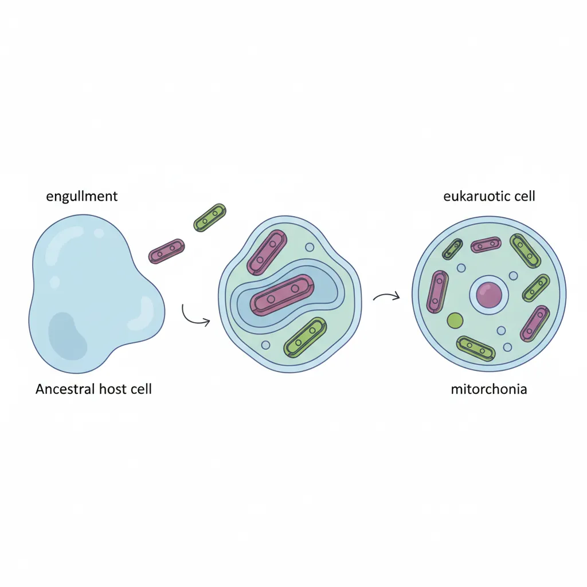
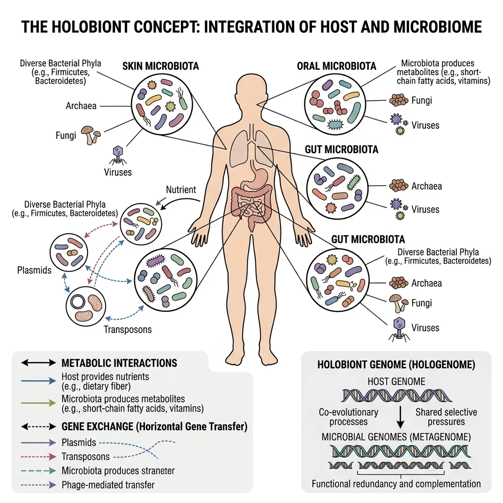
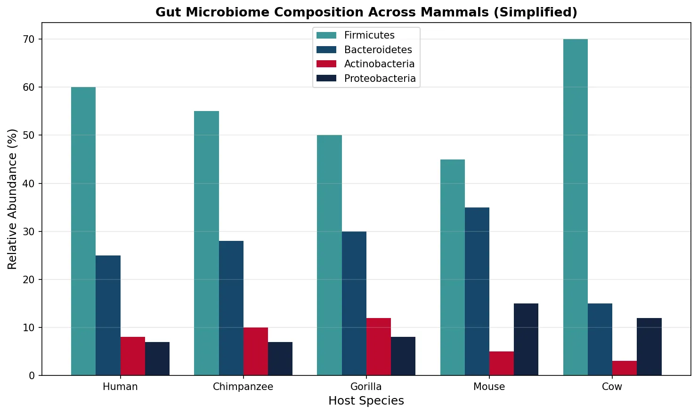

Evolutionary Biology Mastery
Darwin, Wallace & Natural Selection
Foundations, selection types, inclusive fitness, trade-offsGenetics of Evolution
DNA, population genetics, Hardy-Weinberg, molecular clocksSpeciation & Adaptive Radiation
Species concepts, reproductive isolation, rapid diversificationPhylogenetics & Taxonomy
Tree thinking, cladistics, molecular phylogenetics, classificationHuman Evolution & Migration
Hominin lineage, fossil evidence, Neanderthals, cultural evolutionCo-evolution & Symbiosis
Arms races, host-parasite, endosymbiosis, holobiontMass Extinctions & Biodiversity
Big Five extinctions, biodiversity patterns, conservationEvolutionary Developmental Biology
Hox genes, morphological innovation, heterochronyBehavioral & Social Evolution
Cooperation, game theory, sexual strategies, social insectsMathematical & Theoretical Evolution
Fitness landscapes, adaptive dynamics, ESS, selection modelsPaleontology & Fossil Interpretation
Radiometric dating, transitional fossils, taphonomyEvolutionary Genomics
Comparative genomics, gene duplication, HGT, epigeneticsTypes of Species Interactions
No species exists in isolation. Every organism interacts with others — competitors, predators, prey, symbionts, parasites, and mutualists. These interactions are powerful engines of evolution, driving the diversification, adaptation, and extinction of species across the tree of life.

| Interaction Type | Species A | Species B | Classic Example |
|---|---|---|---|
| Mutualism | Benefits (+) | Benefits (+) | Clownfish and sea anemone |
| Commensalism | Benefits (+) | Unaffected (0) | Remora fish on sharks |
| Parasitism | Benefits (+) | Harmed (−) | Malaria parasite in humans |
| Predation | Benefits (+) | Killed (−) | Lion and zebra |
| Competition | Harmed (−) | Harmed (−) | Two plant species sharing soil nutrients |
| Amensalism | Unaffected (0) | Harmed (−) | Walnut tree inhibiting nearby plants (allelopathy) |
Mutualism
Mutualism is an interaction where both species benefit. These partnerships can become so tightly integrated that neither species can survive without the other (obligate mutualism), or they may be beneficial but not essential (facultative mutualism).
The "Wood Wide Web" — Mycorrhizal Fungi & Plants
Over 90% of land plants form mycorrhizal associations with fungi. The plant provides sugars from photosynthesis; the fungus provides phosphorus and water from soil through its vast hyphal network. Some trees share resources with seedlings through underground fungal networks (dubbed the "Wood Wide Web" by Suzanne Simard). This mutualism is over 400 million years old — it was likely essential for the colonisation of land by the first plants. Without mycorrhizae, most plants grow poorly or die.
Other important mutualisms:
- Nitrogen-fixing bacteria & legumes — Rhizobium bacteria in root nodules convert atmospheric N₂ to ammonia; the plant provides carbon compounds
- Clownfish & sea anemones — clownfish receive protection from anemone stinging cells (to which they are immune); anemones receive food scraps and territorial defence
- Leafcutter ants & fungus gardens — ants cultivate a specific fungus as food, providing it with leaf substrate in underground chambers
Commensalism
Commensalism is an interaction where one species benefits while the other is unaffected. True commensalism is actually quite rare — upon closer investigation, many apparently commensal relationships turn out to involve subtle costs or benefits to both parties.
- Epiphytes — orchids and bromeliads growing on tree branches gain access to light without harming the tree
- Remora fish — attach to sharks via a sucker disc, feeding on scraps; the shark is largely unaffected
- Cattle egrets — follow large herbivores, feeding on insects disturbed by their movement
Parasitism
Parasitism is the most common lifestyle on Earth — there are more parasitic species than free-living species. Parasites benefit at the expense of their host, but unlike predators, they typically don't kill the host immediately (it is an evolutionary dead end to kill your home too quickly).
| Parasite Type | Description | Example |
|---|---|---|
| Ectoparasite | Lives on the outside of the host | Ticks, fleas, lice |
| Endoparasite | Lives inside the host body | Tapeworms, malaria parasites |
| Parasitoid | Larva feeds inside host, eventually killing it | Parasitoid wasps laying eggs in caterpillars |
| Brood parasite | Exploits another species' parental care | Cuckoo laying eggs in other birds' nests |
Co-evolutionary Dynamics
Coevolution occurs when two or more species reciprocally influence each other's evolution. Each species acts as a selective pressure on the other, creating a dynamic, ongoing evolutionary dialogue that can drive rapid adaptation, specialisation, and diversification.

Arms Races — Predator-Prey
Coevolutionary arms races occur when improvements in one species (e.g., a predator's speed) select for counter-adaptations in the other (e.g., prey's speed or camouflage), which in turn selects for further improvements in the first — a perpetual escalation described by the Red Queen hypothesis.
Rough-Skinned Newts vs. Garter Snakes
The rough-skinned newt (Taricha granulosa) produces tetrodotoxin (TTX), one of the most potent neurotoxins known — a single newt carries enough to kill several adult humans. Common garter snakes (Thamnophis sirtalis) have evolved TTX-resistant sodium channels, allowing them to eat the newts. The result is an escalating arms race: populations with more toxic newts face snakes with greater resistance, and vice versa. In "hotspot" areas of western North America, both toxicity and resistance are extreme; in areas without the other species, both traits are reduced. This is one of the best-documented coevolutionary arms races in nature.
import numpy as np
import matplotlib.pyplot as plt
# Red Queen dynamics — oscillating fitness in predator-prey coevolution
np.random.seed(42)
generations = np.arange(0, 200)
prey_fitness = 0.5 + 0.3 * np.sin(generations * 0.08) + 0.05 * np.random.randn(200)
predator_fitness = 0.5 + 0.3 * np.sin(generations * 0.08 + np.pi/4) + 0.05 * np.random.randn(200)
fig, ax = plt.subplots(figsize=(11, 5))
ax.plot(generations, prey_fitness, color='#3B9797', linewidth=2, label='Prey defence level')
ax.plot(generations, predator_fitness, color='#BF092F', linewidth=2, label='Predator offence level')
ax.fill_between(generations, prey_fitness, alpha=0.1, color='#3B9797')
ax.fill_between(generations, predator_fitness, alpha=0.1, color='#BF092F')
ax.set_xlabel('Generations', fontsize=12)
ax.set_ylabel('Relative Trait Level', fontsize=12)
ax.set_title('Red Queen Dynamics: Predator-Prey Coevolutionary Arms Race',
fontsize=13, fontweight='bold')
ax.legend(fontsize=10)
ax.grid(alpha=0.3)
plt.tight_layout()
plt.show()

Host-Parasite Evolution
Host-parasite coevolution is one of the most intense evolutionary interactions. Parasites are under strong selection to infect hosts; hosts are under equally strong selection to resist infection. This creates rapid cycles of adaptation:
- Frequency-dependent selection — rare host genotypes have an advantage because parasites are adapted to common genotypes (explaining why sexual reproduction and genetic diversity are maintained)
- Virulence evolution — parasites face a trade-off between replicating rapidly (high virulence, but host dies quickly) and transmitting to new hosts (requires host to be alive and mobile). This predicts that parasites evolve toward intermediate virulence
- Immune system arms race — the vertebrate adaptive immune system (antibodies, T-cells) is itself a product of the coevolutionary arms race with pathogens
Bacteria-Phage Coevolution in Real Time
Laboratory experiments with Pseudomonas fluorescens bacteria and their bacteriophage (virus) SBW25Φ2 have directly observed coevolutionary arms races. Over hundreds of generations, bacterial populations evolved resistance to the phage, and phages counter-evolved to overcome that resistance. Both species showed accelerating molecular evolution at the genes controlling this interaction. Crucially, bacteria coevolving with phages maintained higher genetic diversity than bacteria grown without phages — supporting the Red Queen hypothesis and explaining why sex and recombination are advantageous.
Pollinator-Plant Relationships
The relationship between flowering plants (angiosperms) and their pollinators is one of the great coevolutionary stories. Plants "advertise" with flowers — colour, shape, scent, nectar — and pollinators transfer pollen between flowers, enabling sexual reproduction.

| Pollination Syndrome | Flower Traits | Typical Pollinator |
|---|---|---|
| Bee pollination | Blue/yellow, sweet scent, landing platform, UV nectar guides | Honeybees, bumblebees |
| Bird pollination | Red/orange, tubular, no scent, copious nectar | Hummingbirds, sunbirds |
| Bat pollination | White/dull, strong musty scent, opens at night | Fruit bats |
| Fly pollination | Dark, rotting flesh smell, hairy | Carrion flies |
| Wind pollination | No petals, no scent, abundant lightweight pollen | Wind (abiotic) |
Symbiosis in Evolution
While coevolution implies reciprocal adaptation between free-living species, symbiosis describes intimate, long-term physical associations. Some of the most transformative events in the history of life — including the origin of eukaryotic cells — resulted from symbiotic mergers.

Origin of Mitochondria — Endosymbiosis
The endosymbiotic theory, championed by Lynn Margulis in 1967, proposes that mitochondria and chloroplasts were once free-living bacteria that were engulfed by ancestral eukaryotic cells. Instead of being digested, they became permanent internal symbionts — an event that occurred approximately 1.5–2 billion years ago.
Lynn Margulis and the Endosymbiotic Theory
Lynn Margulis's 1967 paper "On the Origin of Mitosing Cells" was rejected by 15 journals before being published. She proposed that mitochondria descended from alphaproteobacteria and chloroplasts from cyanobacteria. The evidence is now overwhelming: both organelles have their own circular DNA (like bacteria), double membranes (the inner membrane from the engulfed bacterium, the outer from the host), 70S ribosomes (bacterial-type), and they divide by binary fission. Phylogenetic analysis confirms they nest within bacterial clades. This was not a minor tweak — endosymbiosis created the eukaryotic cell, the foundation for all complex multicellular life.
Microbiome Evolution
Every multicellular organism hosts a vast community of microorganisms — bacteria, archaea, fungi, viruses — collectively called the microbiome. In humans, microbial cells roughly equal human cells in number (~38 trillion), and the microbial gene count exceeds the human gene count by 100-fold.

- Gut microbiome — essential for digestion (breaking down complex carbohydrates), vitamin synthesis (K, B12), immune system development, and even mood regulation via the gut-brain axis
- Coevolved specificity — different host species harbour distinct microbial communities that mirror the host phylogeny ("phylosymbiosis"). The microbiome of closely related species is more similar than that of distant relatives
- Vertical transmission — many symbiotic microbes are passed from mother to offspring (during birth, through breast milk), ensuring continuity
import numpy as np
import matplotlib.pyplot as plt
# Microbiome composition comparison across species
species = ['Human', 'Chimpanzee', 'Gorilla', 'Mouse', 'Cow']
firmicutes = [60, 55, 50, 45, 70]
bacteroidetes = [25, 28, 30, 35, 15]
actinobacteria = [8, 10, 12, 5, 3]
proteobacteria = [7, 7, 8, 15, 12]
fig, ax = plt.subplots(figsize=(10, 6))
x = np.arange(len(species))
width = 0.2
bars1 = ax.bar(x - 1.5*width, firmicutes, width, label='Firmicutes', color='#3B9797')
bars2 = ax.bar(x - 0.5*width, bacteroidetes, width, label='Bacteroidetes', color='#16476A')
bars3 = ax.bar(x + 0.5*width, actinobacteria, width, label='Actinobacteria', color='#BF092F')
bars4 = ax.bar(x + 1.5*width, proteobacteria, width, label='Proteobacteria', color='#132440')
ax.set_xlabel('Host Species', fontsize=12)
ax.set_ylabel('Relative Abundance (%)', fontsize=12)
ax.set_title('Gut Microbiome Composition Across Mammals (Simplified)',
fontsize=13, fontweight='bold')
ax.set_xticks(x)
ax.set_xticklabels(species)
ax.legend(fontsize=10)
ax.grid(axis='y', alpha=0.3)
plt.tight_layout()
plt.show()

Holobiont Concept
The holobiont concept proposes that the fundamental unit of biological organisation is not the individual organism, but the organism plus all its associated microorganisms. A human, for example, is a "superorganism" — a holobiont comprising human cells and the trillions of microbes living in and on it.
Practical implications of the holobiont concept:
- Medicine — faecal microbiota transplants (FMT) to treat Clostridioides difficile infections; probiotics for gut health
- Agriculture — engineering plant microbiomes to enhance crop yields and pest resistance
- Conservation — considering microbiome health when reintroducing endangered species; captive-bred animals may lack wild-type microbiomes
Exercises & Review
Exercise 1: Classify the Interaction
For each scenario, identify the type of species interaction (mutualism, commensalism, parasitism, predation, or competition):
- A tick feeds on a deer's blood
- A barnacle attaches to a whale's skin
- Mycorrhizal fungi provide phosphorus to a tree in exchange for sugars
- A cuckoo lays its egg in a reed warbler's nest
Show Answers
- Parasitism — tick benefits, deer is harmed (blood loss, disease transmission)
- Commensalism — barnacle gains a mobile substrate and access to food-rich water; whale is likely unaffected
- Mutualism — both species benefit (phosphorus for sugar exchange)
- Brood parasitism — a special form of parasitism; the cuckoo benefits, the warbler's own chicks are displaced and die
Exercise 2: Red Queen and Arms Races
Explain the Red Queen hypothesis using the newt–garter snake arms race as an example. Address: (a) What drives the escalation? (b) Why don't both species reach a "final" equilibrium? (c) How does this relate to sexual reproduction?
Show Answer
(a) Newts produce tetrodotoxin (TTX); snakes evolve TTX-resistant sodium channels. More toxic newts survive better (snakes cannot eat them); more resistant snakes survive better (they can eat toxic newts). Each adaptation selects for a counter-adaptation in the other species. (b) There is no stable equilibrium because each improvement by one species shifts the selection pressure on the other — it's a perpetual race. Costs of toxin production and resistance prevent indefinite escalation (trade-offs). (c) The Red Queen explains why sexual reproduction is maintained despite being costly (males produce no offspring directly). Sexual recombination generates genetic diversity, which is essential for evolving novel defences against rapidly coevolving parasites and predators.
Exercise 3: Endosymbiotic Evidence
List four lines of evidence supporting the endosymbiotic origin of mitochondria and chloroplasts.
Show Answer
- Double membrane — inner membrane from engulfed bacterium, outer from host cell's vesicle
- Own circular DNA — similar to bacterial chromosomes, not linear eukaryotic chromosomes
- 70S ribosomes — bacterial-type, not the 80S ribosomes found in eukaryotic cytoplasm
- Binary fission — divide independently by splitting, like bacteria, not by mitosis
Additional evidence: Phylogenetic analyses place mitochondria within Alphaproteobacteria and chloroplasts within Cyanobacteria; both organelles are sensitive to antibacterial antibiotics.
Downloadable Worksheet
Co-evolution & Symbiosis Worksheet
Document your study of species interactions, coevolutionary dynamics, and symbiotic relationships. Download as Word, Excel, or PDF.
Conclusion & Next Steps
Species do not evolve in isolation — they evolve in response to each other. From the endosymbiotic origin of eukaryotic cells to ongoing predator-prey arms races and the intricate coevolution of flowers and pollinators, interspecific interactions have been among the most powerful drivers of evolutionary innovation throughout the history of life. The emerging holobiont concept reminds us that even the concept of "an individual" is more nuanced than we once thought.